Ratio Spreads 1 — The Short Bull Ratio Spread
Buy more cheap OTM calls, write fewer expensive ITM calls at a lower strike — a near-free, unlimited-upside bet built for long-dated turnaround stories.
A ratio spread buys and sells UNEQUAL numbers of options. The short bull ratio spread buys MORE higher-strike (cheaper, OTM) calls and writes FEWER lower-strike (dearer, ITM) calls at the same expiry, sized for roughly zero cost — so a big rally pays unlimited, a big drop costs you almost nothing, and the only bad outcome is the stock going nowhere.
The gist
- A ratio spread means buying and selling UNEQUAL numbers of options; the short bull ratio spread buys MORE higher-strike (cheap OTM) calls and writes FEWER lower-strike (dear ITM) calls, same expiry, at a chosen ratio (3:1 in the example).
- Size it for as close to zero cost as possible — a small debit, zero, or even a small credit — so the whole trade risks very little.
- Payoff: unlimited upside (from the extra long calls), loss limited to the net debit, WORST at the long strike at expiry; the asymmetry is that a big DROP is fine (both legs worthless below the short strike → lose only the debit) and the bad outcome is the stock going nowhere.
- Best for long-dated (6–12 month) fundamental turnaround or momentum stories with explosive upside but real downside — and as a near-free hedge for a short-stock position against a technical squeeze.
- BlackBerry example (26 Feb 2018, spot $12.54, expiry 18 Jan 2019): WRITE 6× $10 calls @ $3.65 (credit $2,190) + BUY 18× $15 calls @ $1.35 (debit $2,430) = net debit ≈ $240.
- Outcomes: at $10 lose $240; at $12.54 lose ~$1,764; at $15 worst case −$3,240; at $20 +$2,760; at $25 +$8,760.
- Against alternatives on 17 contracts: the long $15 call (17× @ $1.35 = $2,295, BE $16.35, R/R 2.70, delta 0.43); the $15/$20 bull call spread (net debit $0.85, $1,445 risk, $7,055 upside, R/R 4.88); the $15/$25 bull call spread (net debit $1.15, BE $16.15, R/R 7.69).
- Open interest reads market-maker positioning: $15 call OI 24,180 vs $15 put OI 11,516; $20 call OI 8,191 vs $17 call OI 2,717 — MMs look short calls and are buying them back, inflating call prices and IV.
- IV rises by strike ($15 call 44.75%, $20 45.55%, $25 46.75%), a double-whammy that makes the bull call spread cheap; Anton's honest conclusion is that here the bull call spread was worth the extra money over the ratio spread.
What this chapter covers
- Video 16 opens the ratio-spread family; first up is the SHORT BULL RATIO SPREAD.
- The usual process: a quick explanation, when and how to use it, breakeven / profit (max upside) / risk (max downside) calculations, and a strategy example.
- The strategy is graded high in usefulness and stays in the 'useful PDF' for its dynamics.
Anton runs each strategy through the same template so you can compare it against every other tool. This one earns its place because of unlimited upside, limited risk, and near-zero cost.
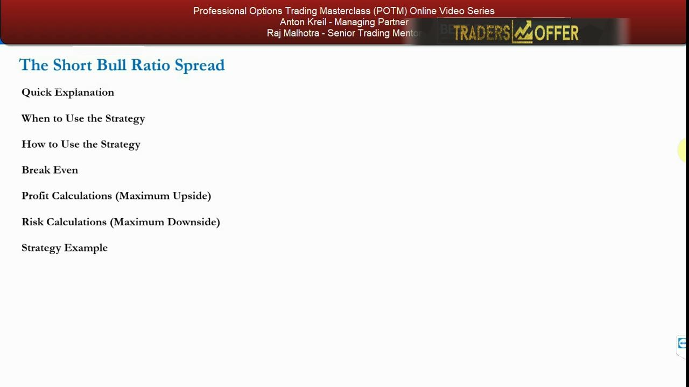
What a short bull ratio spread is
- Buy a long call AND write a call at a LOWER strike, both with the SAME expiration date.
- It profits from the security rising, like simply buying calls, but is designed to reduce the upfront cost of a plain long call while keeping profits unlimited.
- Only two transactions, but the complexity is choosing the RATIO (buy more than you write) and which STRIKES to use.
- Keep upfront cost as low as possible by buying calls that are CHEAPER than the ones you write (the written ones are lower-strike and in the money).
The trick is that the calls you write are in the money and expensive, and the calls you buy are out of the money and cheap — so a larger number of the cheap ones can be funded almost entirely by a smaller number of the dear ones.
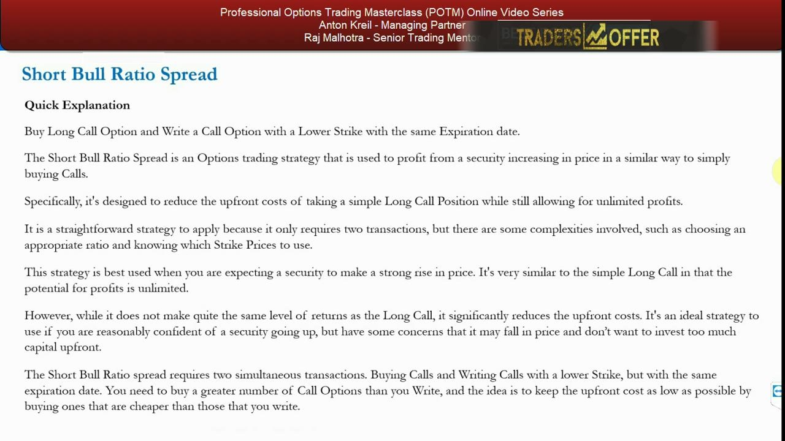
The basic parameters
- Directional bet — bullish; you want a significant rise in the stock.
- Simple, two transactions: long calls at a HIGHER strike, short (ITM) calls at a LOWER strike.
- Put on for a debit or a credit — try to get it as close to ZERO as possible.
- Max risk is LIMITED; max gain is UNLIMITED (the stock could in theory go to infinity).
Limited risk plus unlimited upside for roughly zero outlay is the whole appeal — but it only holds if you can actually get the ratio and strikes on at sensible prices.
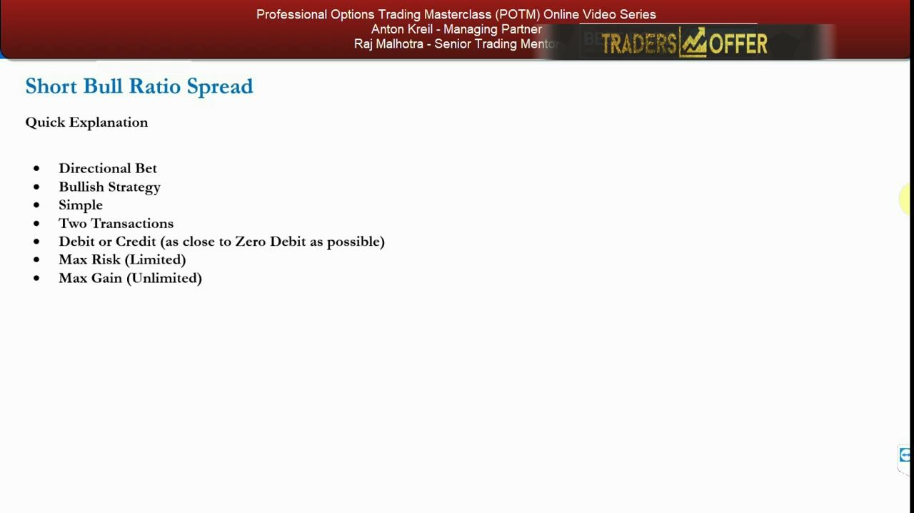
When to use it — and the key asymmetry
- It profits if, by expiration, the stock rises enough that your long calls are worth more than the lower-strike, higher-priced calls you wrote.
- Example (3:1 ratio): if your calls are worth $1 each and the written ones $2.50 each, the higher the stock goes the more you make.
- The MAXIMUM loss occurs when the stock is exactly at the strike of the calls BOUGHT at expiry — your longs expire worthless while you carry a liability on the writes.
- Unusually for a bullish trade, a big DROP is better than a small one: below the strike of the calls you wrote, those expire worthless too and you lose only the upfront cost.
This is the defining quirk. The trade wants a big move either way rather than a drift; being pinned at the long strike is the single worst outcome, while a collapse leaves you losing only the debit.
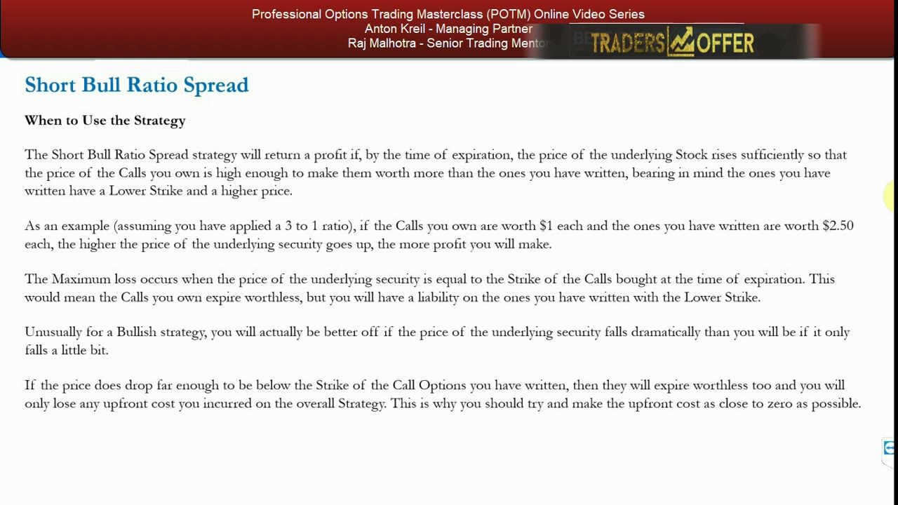
The fundamental turnaround setup
- Ideal in turnaround stories: the stock either goes up massively (genuine turnaround) or continues the fundamental bleed — it may even become a takeover target.
- Also useful for growth / momentum plays where a long call or call spread just seems too expensive.
- A long-dated version can be put on for close to zero cost, zero cost, or even a credit, letting you play the momentum over the long term.
- Because you WRITE in-the-money calls, the longer-dated the expiry the more expensive they are and the more money you take up front — you earn on that leg through time decay.
The longer the horizon, the less likely the stock sits still — which is exactly what a strategy that hates a flat outcome wants. That is why turnaround and momentum stories, given time, suit it.
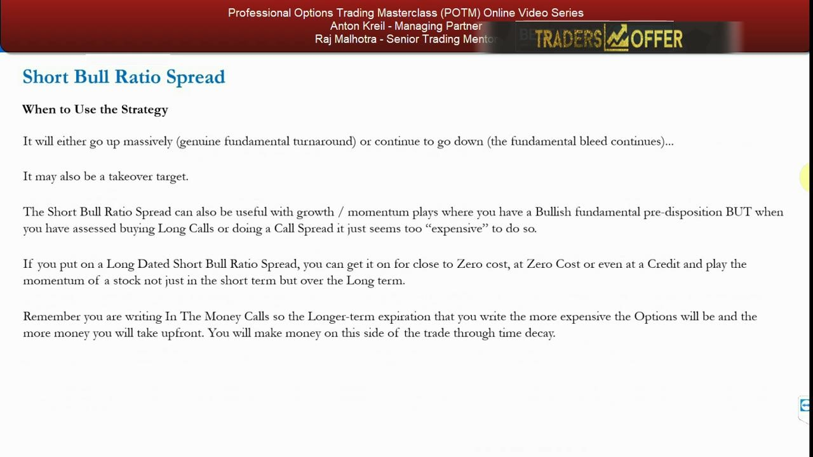
As a free hedge for a short-stock position
- If you are short a stock that may squeeze higher short-term but whose bad fundamentals won't change, you still want to stay fundamentally short.
- Put on a zero-cost short bull ratio spread as a 'free hedge': if the stock rallies you lose on the short stock but make it back on the spread.
- Unwind the spread when you think the stock has topped, leaving you short at higher prices having lost no money on the rally.
- A big advantage over buying a call or a bull call spread as a hedge because you pay nothing — you just need more capital to size it, and make proportionately less than an outright long call would.
The same near-free, big-move payoff that makes it a bullish speculation also makes it a cheap defence against a technical short squeeze without abandoning a bearish fundamental view.
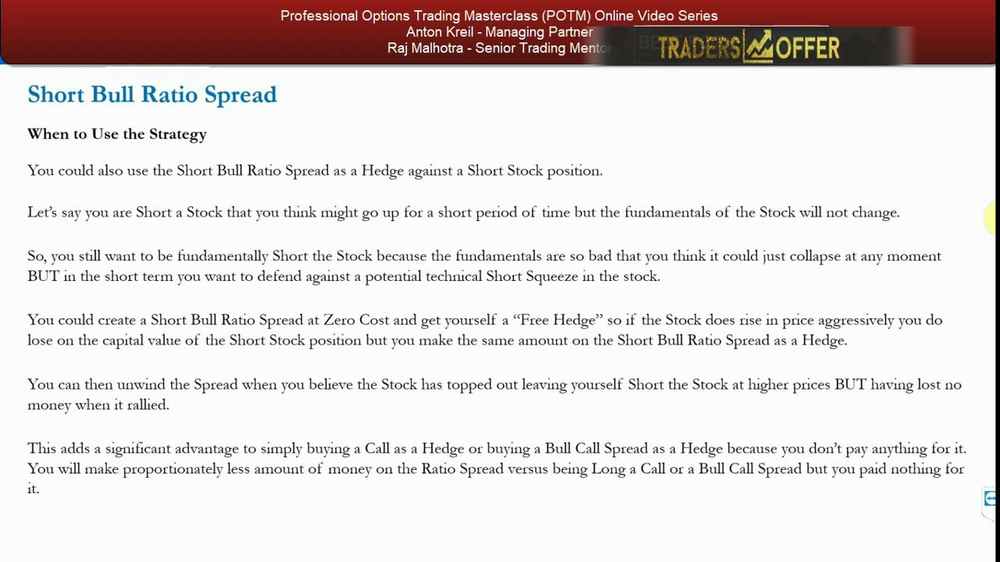
How to use it — best of both worlds, with a caveat
- Best of both worlds: if the stock rises a fair amount, unlimited profits; if it falls a fair amount, you lose little or nothing.
- The only real risk is the stock not moving much — then your longs decay while you still carry a liability on the writes.
- If it becomes obvious before expiry the stock won't move, unwind and claw back as much as you can.
- The one hurdle is getting the ratio and strikes right — simple once learned, but hard when starting out; the minor drawback is you won't profit as fast as simply buying calls.
Anton is honest that this is not a free lunch: a dead, flat stock is the enemy, and you must actively manage out of it rather than hold to a worthless expiry.
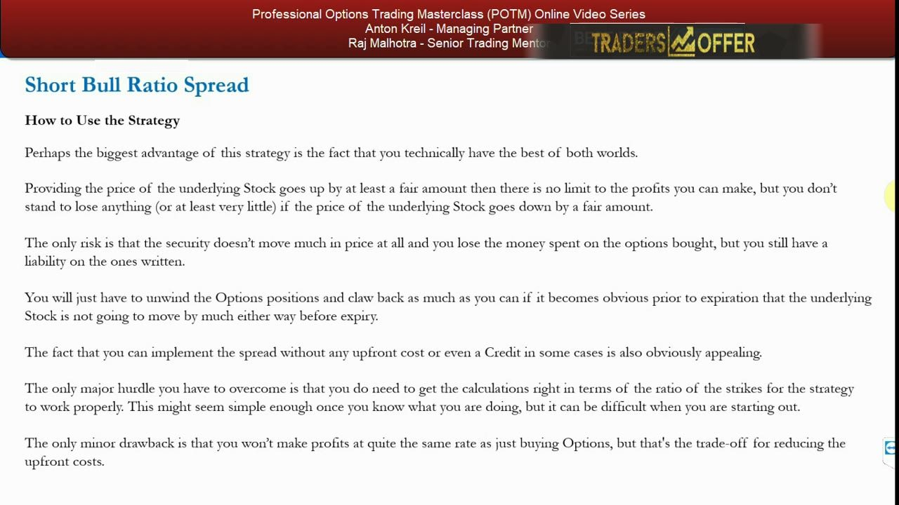
Long-dated, and only where it beats the alternatives
- Give yourself a long-dated shot — fundamental turnaround stories or longer-term momentum plays; 'getting in for free' plus enough time is the way to play it.
- Most useful versus owning stock, a long call (upfront cost + time decay), or a bull call spread (upfront cost too).
- It is MOST optimal in the TURNAROUND situation; in a pure momentum play it is hard to justify over just buying a call, because there's less doubt the stock falls near-term.
- Look 6–12 months out to play turnaround stories in stocks down after 1–2 bad years of fundamental decline.
The edge is specifically the turnaround case, where you don't claim to pick the exact bottom quarter — you give the company several quarters and let a near-free structure carry the risk.
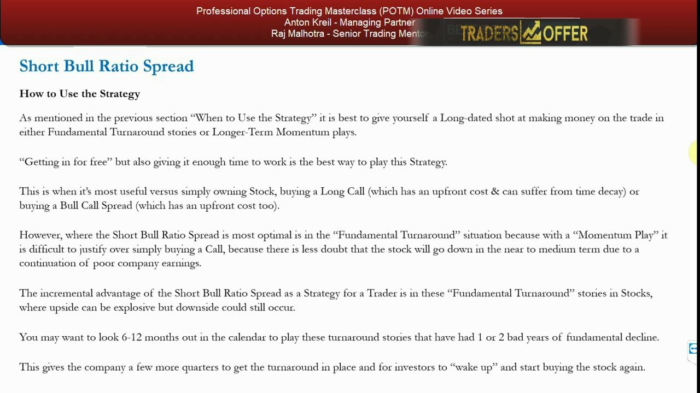
The BlackBerry example — the setup
- Slide taken 26 February 2018; BlackBerry (BB) in a long fundamental mess, spot around $12.54–$12.55, recently below $10.
- Thesis: over the next year (by January 2019) you think it turns around and heads to $20 — but it could just as easily go below $10 or do nothing.
- Reference lines drawn near $15 and $10 mark the strikes in play.
- Here the short bull ratio spread could beat simply buying stock, a call, or a bull call spread.
BlackBerry is the archetypal falling-knife turnaround: explosive upside if it finally turns, real further downside if the bleed continues — exactly the fundamental shape the strategy is built for.
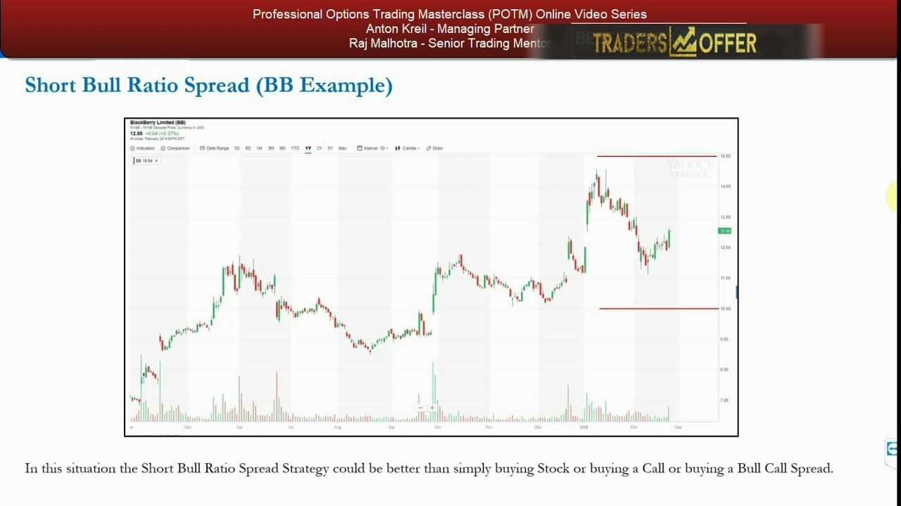
Baseline — long stock vs a long OTM call
- $25,000 notional = $25,000 / $12.54 = 1,993 shares; at $10 you lose $2.54 × 1,993 = $5,062; at $20 you make $7.46 × 1,993 = $14,867.
- The $15 call (10% OTM): 17 contracts (16.67 rounded up) at $1.35 × 100 = $2,295 spent.
- Breakeven $15 + $1.35 = $16.35; at $20 you make $3.65 × 17 × 100 = $6,205, a 2.70 risk/reward.
- The stock must rally 30.38% to break even, yet the call's delta is 0.43 — pricing an almost 50% chance of finishing ITM, which Anton finds unrealistic.
The long call already looks like a poor deal: a demanding 30% breakeven, only 2.70 risk/reward, and a delta that seems too generous — a hint the whole call surface is richly priced.
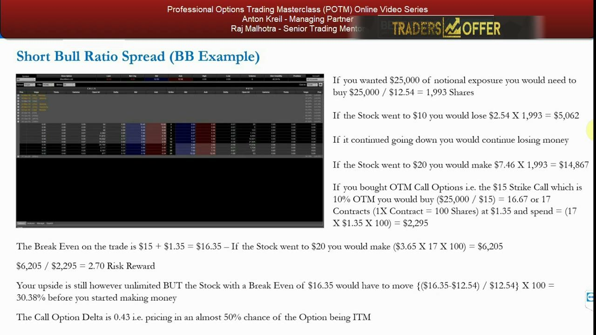
The ratio spread — marginal benefit and worked payoff
- The trade: WRITE 6× $10 calls @ $3.65 (credit $2,190) + BUY 18× $15 calls @ $1.35 (debit $2,430) — a 3:1 ratio for a net debit ≈ $240.
- Max downside is at the long ($15) strike at expiry: longs worthless, ~$5 liability on 6 short contracts → −$3,240 (including the $240 debit).
- Flat at $12.54: shorts carry $2.54 × 6 × 100 = $1,524 liability, minus the $240 debit → lose ~$1,764; at $10 both legs worthless → lose only $240; at $20 → +$2,760.
- If it doubles to $25: longs make 18 × $10 × 100 = $18,000, shorts owe 6 × $15 × 100 = $9,000, minus $240 → NET +$8,760, with upside still unlimited above.
The marginal benefit only appears on a big move: nowhere-to-modest is poor, a collapse costs only the debit, and a genuine double delivers $8,760 with the tail left open.
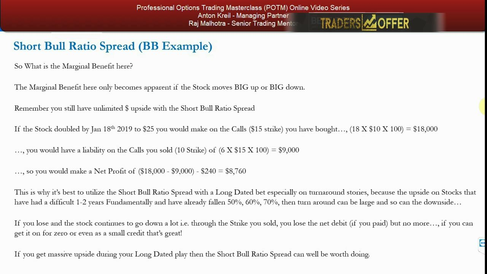
Versus the bull call spreads
- The flat/small-move case is the weakness — if the stock doesn't move you'd have been better off just long stock (breakeven).
- Max downside comparison: short bull ratio spread $3,240 vs the $15/$20 bull call spread $1,445, which offered $7,055 upside — a 4.88 risk/reward.
- The $15/$25 bull call spread: buy $15 calls @ $1.35, sell $25 calls @ ~$0.20 → net debit $1.15, $8.85 upside, 7.69 risk/reward, $16.15 breakeven, ~10 months to work.
- On 17 contracts that $15/$25 spread has $17 × 8.85 × 100 = $15,045 upside for a max risk of 17 × $1.15 × 100 = $1,955.
Head to head, the bull call spreads deliver far better risk/reward for less capital at risk — the honest lesson that considering the ratio spread led you to a better trade.
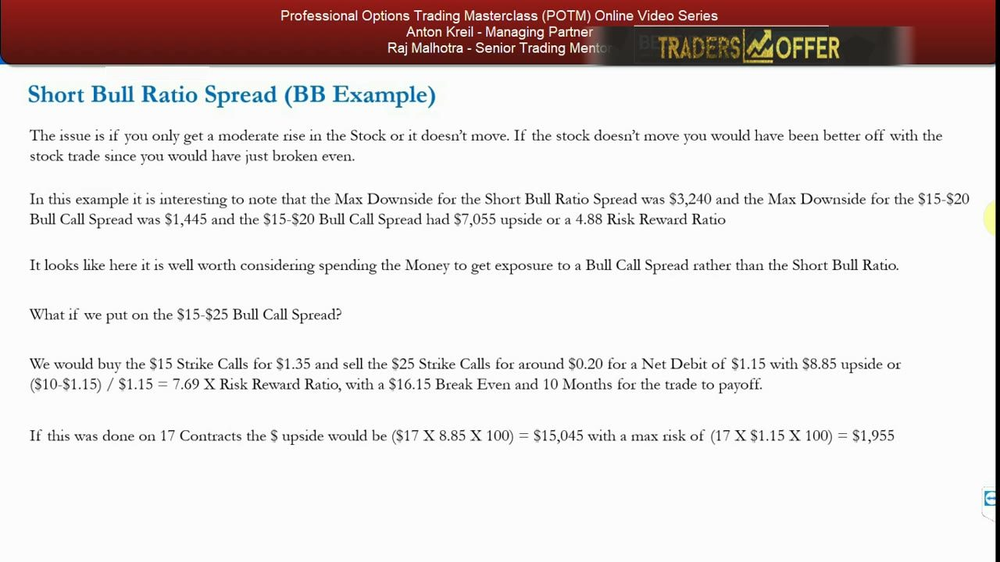
The real lesson — options versus options
- The takeaway: the short bull ratio spread is useful in certain circumstances, but weighing it here surfaced a better trade — the bull call spread.
- This is what real options trading is: rank every possible structure for a specific fundamental view and pick the most optimal.
- You might STILL prefer the ratio spread if you genuinely fear the stock could be $7–$8 by January and don't want to risk the bull-call-spread premium.
- A prompt to notice the open interest in the call options.
Anton's point is process, not a single winner: you compare options against stock and against each other, and your fundamental conviction — not just the ratio — decides which premium you're willing to spend.
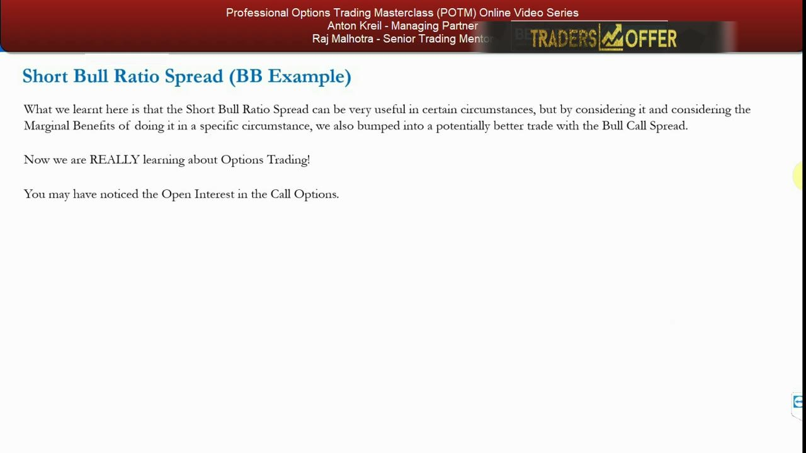
Open interest and market-maker positioning
- Clear demand for calls over puts: $15 call OI 24,180 vs $15 put OI 11,516 — over twice the calls.
- $20 strike call OI 8,191 vs only 2,717 at the $17 strike; MMs look short $20 (and $25) calls and appear to be panicking to buy them back.
- That short-call positioning inflates call prices AND implied vols at higher strikes, which is what made the bull call spread's risk/reward so attractive.
- Reading OI this way lets you infer who is trapped and take advantage of it.
Anton infers the dealers' book from open interest: if market makers are short calls and scrambling to cover, higher-strike call prices and IV are bid up — and you can sell that richness inside a spread.
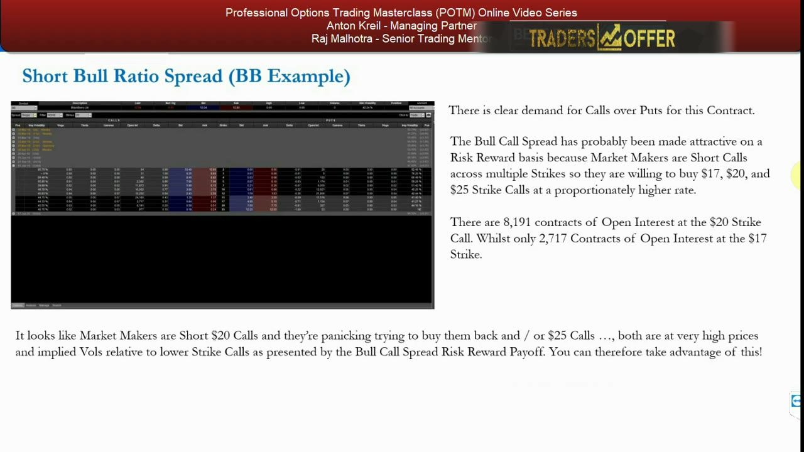
The IV skew — the double whammy
- Implied vol RISES by strike: $15 call 44.75%, $20 call 45.55%, $25 call 46.75%.
- So buying the $15s and selling the $20s or $25s sells HIGHER implied vol at the higher strikes.
- That IV skew, on top of the buy-a-call/sell-a-call structure, is the 'double whammy' behind the bull call spread's excellent risk/reward.
- It's why the $15/$20 and $15/$25 spreads price so favourably here.
You capture two edges at once: the mechanical spread payoff plus selling a fatter implied volatility at the strike you write — a reminder to check the skew, not just the direction.
The formalized strategy example
- A hypothetical, commission-free guide: Company X trades at $50 with an expected strong rise.
- ATM $50 calls trade at $2; ITM $45 calls trade at $6.
- Leg A — BUY 3 $50-strike calls (300 shares) at a cost of $600; Leg B — WRITE 1 $45-strike call (100 shares) for a $600 credit.
- Net cost is ZERO: a short bull ratio spread built for no upfront outlay, with the two extra long calls carrying the unlimited upside.
A clean, round-number template: three cheap long calls funded exactly by one dear written call for zero cost — the whole idea distilled, to work through as homework in the useful PDF.
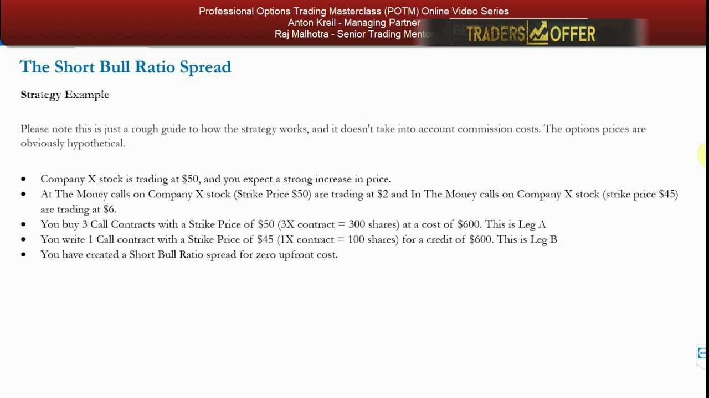
Glossary
- Ratio spreadAn options strategy that buys and sells UNEQUAL numbers of options of the same type and expiry — e.g. 3 bought for every 1 written.
- Short bull ratio spreadBuy MORE higher-strike (cheaper, OTM) calls and write FEWER lower-strike (dearer, ITM) calls at the same expiry, sized for roughly zero cost; bullish with unlimited upside and limited downside.
- Net debit / net creditThe upfront cash paid (debit) or received (credit) for the whole structure; the goal here is to get it as close to zero as possible — in the BB case a ≈$240 net debit.
- Max downside (at the long strike)The worst outcome, at expiry with the stock exactly at the strike of the calls bought — longs expire worthless while the written (ITM) calls carry a liability; −$3,240 in the BB example.
- Bull call spreadBuy a lower-strike call and sell a higher-strike call, same expiry; capped upside but often a better risk/reward — e.g. BB $15/$20 at 4.88 and $15/$25 at 7.69.
- Open interest (OI)The number of option contracts outstanding at a strike; a lopsided call-vs-put or strike-vs-strike OI (24,180 vs 11,516; 8,191 vs 2,717) hints at market-maker positioning.
- Implied volatility skewHow implied vol varies by strike; here it RISES with strike (44.75% / 45.55% / 46.75%), so writing higher strikes sells richer vol — the 'double whammy'.
- DeltaThe option's sensitivity to the underlying and a rough probability of finishing ITM; the $15 BB call's 0.43 delta implied ~50%, which Anton judged unrealistic at a 30% breakeven.
- Fundamental turnaround storyA stock down 50–70% over 1–2 bad years where a genuine turnaround could send it up explosively but the bleed could also continue — the ideal setup for this long-dated strategy.